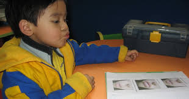

Fonoaudiología
El fonoaudiólogo realiza pruebas para identificar cualquier dificultad en la audición. Cuando ni el niño ni los padres identifican los problemas auditivos, el resultado puede ser un retraso en el desarrollo del habla y el lenguaje y desempeño deficiente en la escuela.

Tomado de: Mcheik J, Sfalli P, Bondonny J, Levard G. Early repair forinfants with cleft lip and nose. Int J Pediatr Otorhinolaryngol 2006; 70: 1785-90.
Hay dos períodos del desarrollo que hay que considerar:
- Antes que el paladar se cierre: desde que el niño nace hasta que el paladar se cierra quirúrgicamente.
- Después que el paladar se cierra: es necesario determinar si su función es suficiente para el lenguaje.